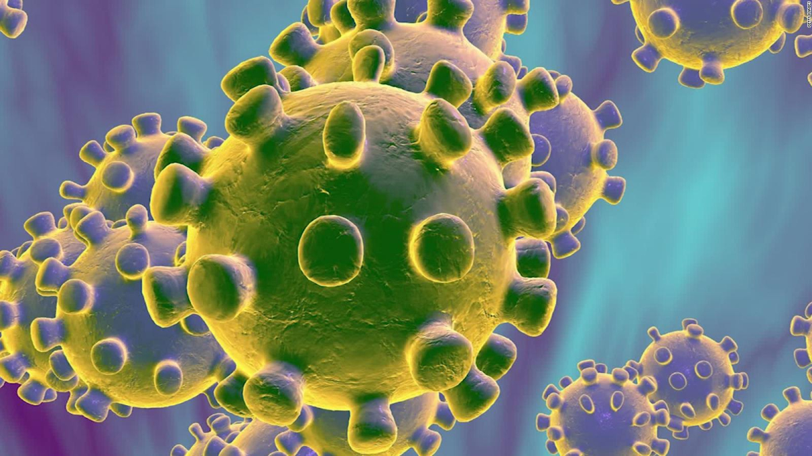
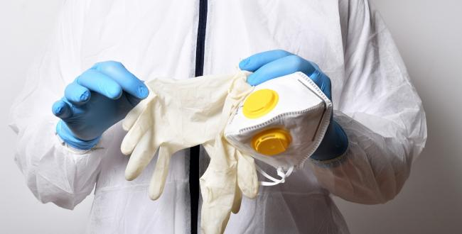

EL CORONAVIRUS

¿Que és?
Los coronavirus son una familia de virusque se descubrió en la década de los 60 pero cuyo origen es todavía desconocido.
Sus diferentes tipos provocan distintas enfermedades, desde un resfriado hasta un síndrome respiratorio grave (una forma grave
de neumonia. Gran parte de los coronavirus no son peligrososy se pueden tratar de forma eficaz. De hecho, la mayoría de las personas contraen
en algún momento de su vida un coronavirus, generalmente durante su infancia. Aunque son más frecuentes en otoño o invierno, se pueden
adquirir en cualquier época del año.
El coronavirus debe su nombre al aspecto que presenta, ya que es muy parecido a una corona o un halo. Se trata de un tipo de virus
presente tanto en humanos como en animales.
En los últimos años se han descrito tres brotes epidémicos importantes causados por coronavirus:
-
SRAS-CoV
El síndrome respiratorio agudo y grave (SRAS, también conocido como SARS y SRAG) se inició en
noviembre de 2002 en China, afectó a más de 8.000 personas en 37 países y
provocó más de 700 muertes. La mortalidad del SRAS-Cov se ha cifrado en el 10%
aproximadamente.
-
MERS-CoV
El coronavirus causante del síndrome respiratorio de Oriente Medio (MERS)
fue detectado por primera vez en 2012 en Arabia Saudita. Se han notificado
hasta octubre de 2019 más de 2.400 casos de infección en distintos países,
con más de 800 muertes. La letalidad es, por tanto, del 35%.
-
COVID-19
finales de diciembre de 2019 se notificaron los primeros casos de un nuevo coronavirus en la ciudad de Wuhan (China). Desde entonces el goteo de nuevos infectados por el virus SARS-CoV-2 (inicialmente llamado 2019nCoV), que provoca el COVID-19, ha sido continuo y su transmisión de persona a persona se ha acelerado. Los casos declarados de nemonía de Wuhan ya superan con creces a los de la epidemia de SRAS, pero la tasa de mortalidad es más baja.
Ya hay personas infectadas en múltiples países, pero los expertos
insisten en que no hay motivos para la alarma. El país más afectado en
Europa es Italia. Aunque se han confirmado casos positivos en España
(que contrajeron el virus en otros países), las autoridades sanitarias
y las sociedades científicas consideran que nuestro país está preparado
para contener la transmisión en caso de que se produzca un brote epidémico.
Causas

Los coronavirus se transmiten de forma limitada entre humanos, pero hasta la
fecha se desconoce el origen de estos virus. En todo caso, se sabe que ciertos
animales, como los murciélagos, actúan como reservorios.Como en otros virus que
causan neumonía, cuando se transmiten en humanos, el contagio se produce
generalmente por vía respiratoria, a través de las gotitas respiratorias que las
personas producen cuando tosen, estornudan o al hablar.
Todo parece indicar que nuevo coronavirus, COVID-19, también conocido como
coronavirus de Wuhan, tiene una procedencia animal. De hecho, los primeros casos
se han relacionado con un mercado de animales vivos de la ciudad de Wuhan,
en China.En cuanto al MERS, es probable que los camellos sean un importante
reservorio para este tipo de coronavirus y una fuente animal de infección en
los seres humanos, como especificaba la Organización Mundial de la Salud en su
nota descriptiva sobre la enfermedad. Sin embargo, se desconoce la función
específica de los camellos en la transmisión del virus y también la ruta o
rutas exactas de transmisión.
En origen, el coronavirus MERS-CoV es un virus zoonótico que se transmite de
animales a personas. Según se desprende del análisis de varios de sus genomas,
se cree que el virus se originó en murciélagos y se transmitió a los camellos en
algún momento de un pasado lejano.Se cree que el coronavirus del SRAS tuvo su
origen en los murciélagos, saltando posteriormente a alguna otra especie de
pequeño mamífero, como la civeta, y por último a los humanos.
Sintomas
En general, los síntomas principales de las infecciones por coronavirus suelen ser:
- Secreción y goteo nasal.
- Tos
- Fatiga.
- Dolor de garganta y de cabeza.
- Fiebre.
- Escalofríos y malestar general.
- Dificultad para respirar (disnea)
En espectro clínico de este tipo de infecciones varía desde la ausencia de
síntomas hasta síntomas respiratorios leves o agudos. Esta tipología suele
cursar con tos, fiebre y dificultades respiratorias. Es frecuente que haya
neumonía y, en el caso del MERS, también se pueden registrar síntomas
gastrointestinales, en especial, diarrea.
Tal y como ocurre con el virus de la gripe, los síntomas más graves
(y la mayor mortalidad) se registra tanto en personas mayores como en aquellos
individuos con inmunodepresión o con enfermedades crónicas como diabetes,
algunos tipos de cáncer o enfermedad pulmonar crónica. En casos extremos
puede ocasionar insuficiencia respiratoria.
Prevención

Hasta la fecha no se dispone de vacuna alguna ni de tratamiento específico
para combatir la infección por coronavirus. Mantener una higiene básica es la
forma más eficaz de evitar contraer este virus en los lugares en los que existe
un mayor riesgo de transmisión, fundamentalmente las zonas del planeta en las que
se han registrado casos. Es conveniente lavarse las manos con frecuencia y evitar
el contacto con personas ya infectadas, protegiendo especialmente ojos, nariz y boca.
A quienes puedan estar en contacto con posibles afectados se les aconseja el uso
de mascarillas y usar pañuelos para cubrirse la nariz y la boca cuando se tose o
se estornuda. Cuando surgió el MERS-Cov se informó de que los productos de
origen animal debidamente procesados por cocción o pasteurización no suponen
ningún riesgo de infección, pero deben manipularse con cuidado para evitar que
se contaminen por contacto con productos crudos. La carne y la leche de camello
pueden seguir consumiéndose tras la pasteurización, cocción u otros tratamientos
por calor; sin embargo su consumo crudo debe descartarse.
Estas precauciones deben seguirlas especialmente aquellas personas que padezcan
diabetes, insuficiencia renal, neumopatía crónica o inmunodepresión, ya que tienen
más riesgo de padecer enfermedad grave en caso de infección por coronavirus.
Tipos
En los coronavirus humanos, la gravedad puede variar sustancialmente entre un tipo y otro:
Coronavirus del resfriado
sta variante de coronavirus corresponde a los tipos 229E y OC43, que provocan los síntomas comunes
de un resfriado, aunque en los casos más graves también pueden ocasionar una neumonía en personas
de edad avanzada o en neonatos.
Síndrome respiratorio de Oriente Medio (MERS-CoV)
Causa graves problemas respiratorios, además de fiebre, tos y dificultad para respirar, aunque en
un primer momento puede ser asintomático. En los casos más graves también se produce expectoración
de sangre, diarrea y vómitos. Tuvo su primer brote en el año 2012 y desde entonces se han reportado
muchos casos en Oriente Medio, aunque también ha llegado a Europa y Estados Unidos.
Coronavirus COVID-19
El nuevo coronavirus detectado a finales de 2019 en China muestra una secuencia genética que
coincide con la del SRAS en un 80%. No obstante, en un principio parece menos virulento y con una
mortalidad inferior. En cambio, su transmisión ha sido muy superior y ya ha causado varios miles
de casos más que el SRAS.
Diagnóstico
Para determinar si el malestar que sufre un paciente proviene de un simple resfriado o de un coronavirus
el médico puede realizar un cultivo de nariz y garganta, o incluso un análisis de sangre.
En casos de sospecha de coronavirus se suele realizar una tomografía de tórax para determinar los
síntomas de neumonía, así como otros análisis de coagulación de sangre, un análisis bioquímico y un
conteo sanguíneo. También se realizan pruebas de anticuerpos y aislamiento del virus del SARS.
Asimismo, con el fin de contener la transmisión, se efectúa una evaluación a aquellas personas que
presentan los síntomas y que puedan ser proclives a contraer el virus.
El control de la temperatura (con cámaras térmicas y termómetros digitales) de las personas que llegan
a un aeropuerto procedentes de zonas afectadas ha sido una de las medidas que se han puesto en marcha
para detectar posibles casos del COVID-19, tal y como se hizo con los brotes anteriores. También se
realizan cuestionarios a los viajeros; en caso de sospecha, se les somete a evaluación y, en su caso,
se les traslada a centros sanitarios.
Tratamientos
No existe una vacuna contra el coronavirus humano que causa resfriado, pero los casos más leves pueden
superarse siguiendo los mismos pasos que un catarro común. Esto no requiere intervención médica y
simplemente con lavarse las manos de forma frecuente, guardar reposo y beber líquidos de forma abundante
los síntomas desaparecerán a los pocos días. También se pueden tomar analgésicos como ibuprofeno o
paracetamol para aliviar dolores de garganta o fiebre.
En casos de coronavirus SRAS, MERS CoV y COVID-19, suele ser conveniente el ingreso hospitalario.
Se administran antivirales, dosis altas de esteroides para reducir la inflamación pulmonar y un soporte
respiratorio con oxígeno; en ocasiones puede precisar antibióticos, pero solo en caso de que existan
infecciones bacterianas sobrevenidas, es decir, sobreinfección.
En resumen, este tipo de infecciones respiratorias se tratan con antivirales y medidas de soporte.
El tratamiento se suele adaptar en función de la gravedad del paciente, ya que hay casos en los que
se producen neumonías graves, pero en otros las manifestaciones son leves